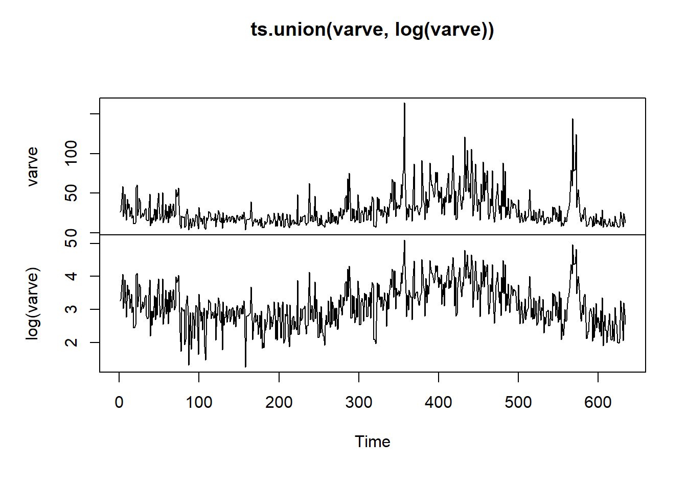
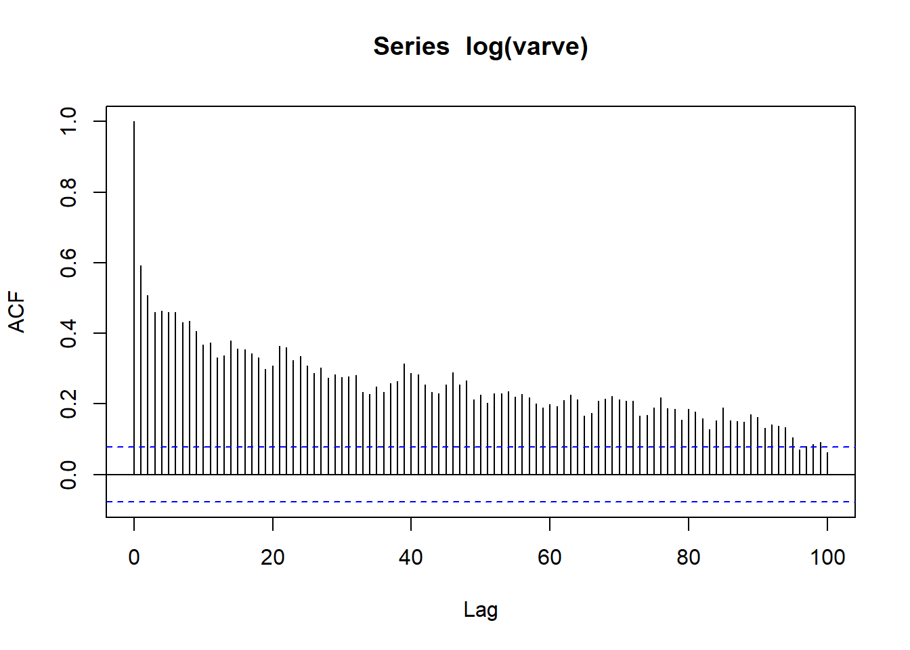
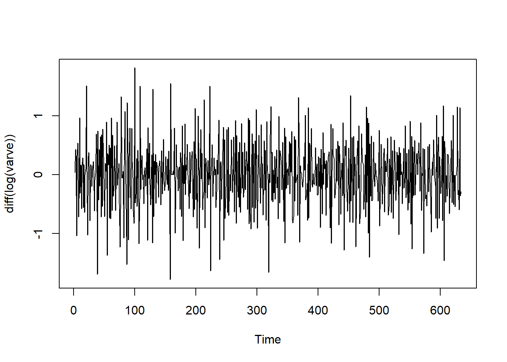
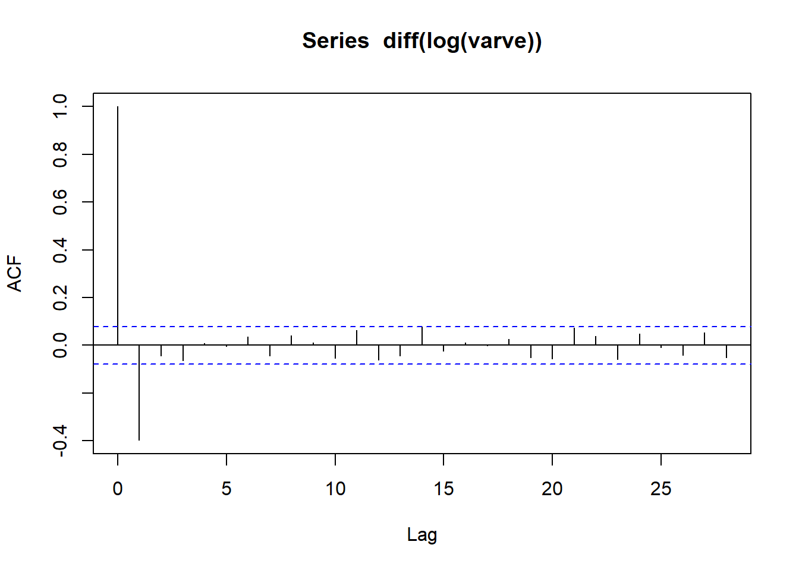
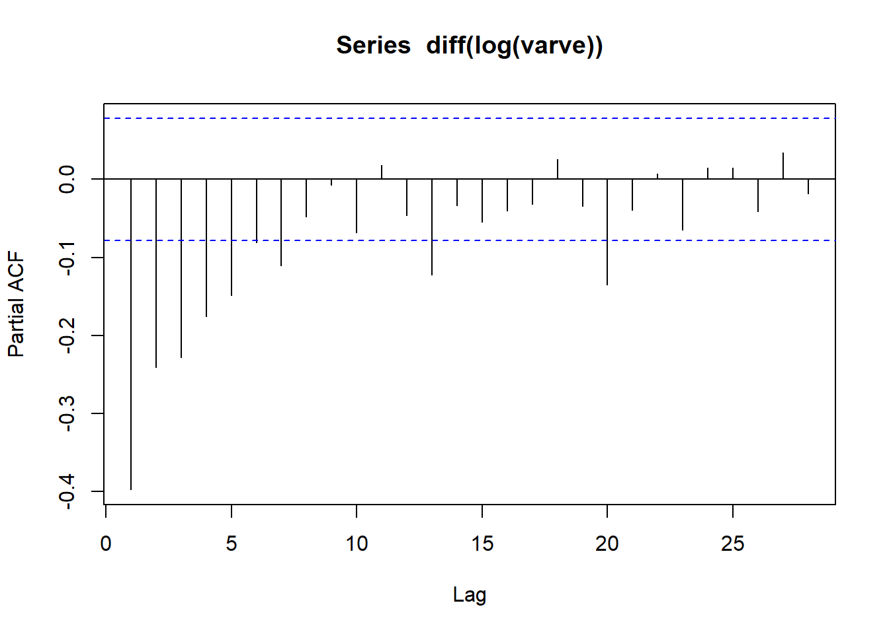
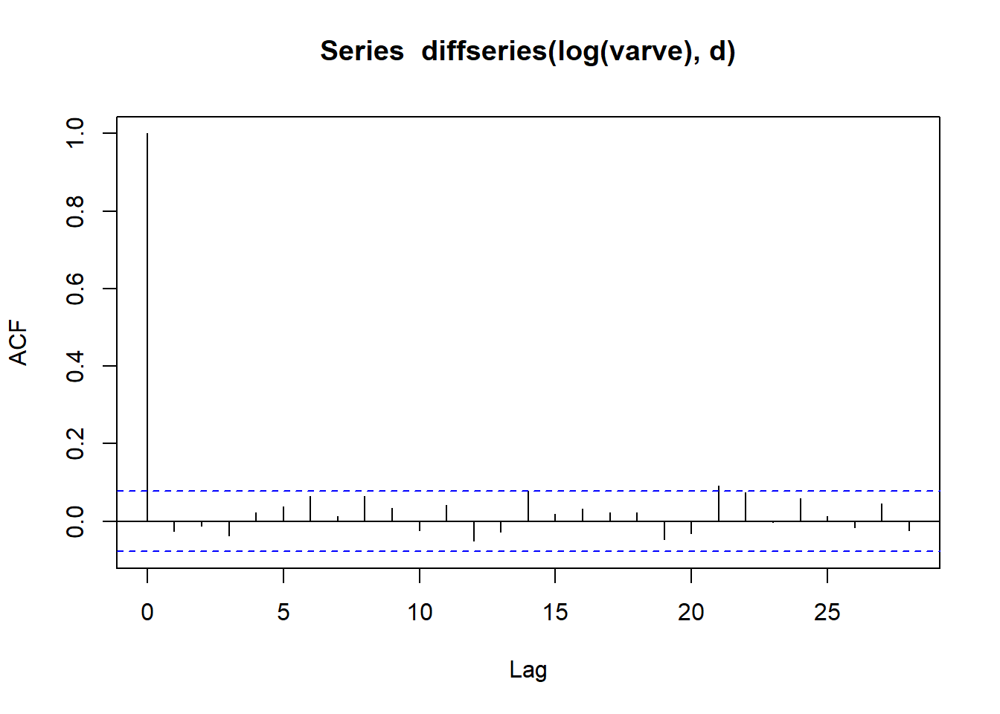
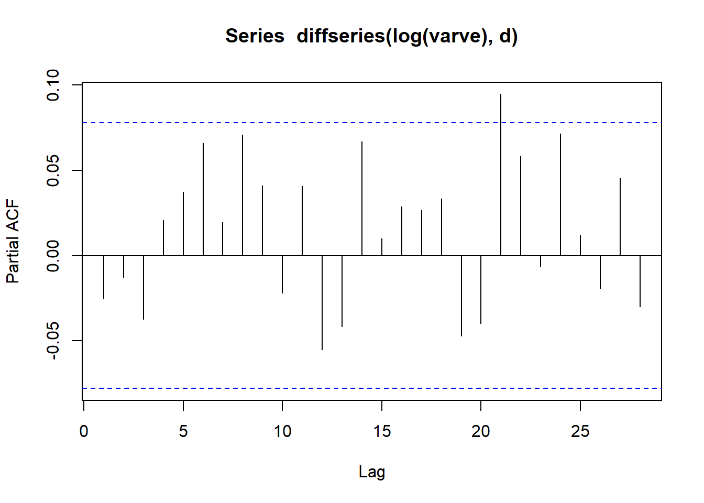
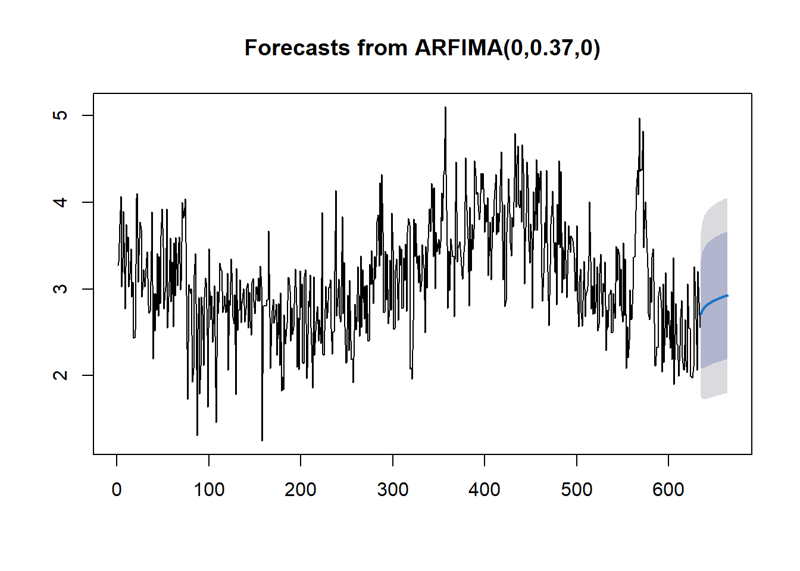

require(astsa)Carregando pacotes exigidos: astsaWarning: pacote 'astsa' foi compilado no R versão 4.5.3plot.ts( ts.union(varve, log(varve)))
Recordemos o Teorema Binomial:
Theorem 14.1 Teorema Binomial. Para quaisquer \(a,b\) reais e \(n\) natural, \[(a+b)^n=\sum_{k=0}^n{n\choose j}a^ jb^{n-j}=\sum_{k=0}^n{n\choose j}b^ ja^{n-j}.\] \(\blacksquare\)
Em particular, fazendo \(a=1\), \(b=-B\) e \(d=n\) , teremos que nosso tradicional operador diferença pode ser reescrito como
\[\begin{align}(1-B)^d&=\sum_{j=0}^d{ d\choose j}(-1)^jB^j\\&=1-d B + \frac{d(d-1)}{2!}B^2-\frac{d(d-1)(d-2)}{3!}B^3\\&+\cdots+(-1)^d B^d\end{align}\]
Acontece que o Teorema Binomial pode ser generalizado para \(n\) real, conforme o teorema abaixo.
Theorem 14.2 Teorema Binomial Generalizado. Se \(|x|<1\), então para qualquer \(n\) real, \[(1-x)^n=\sum_{j=0}^\infty (-1)^j\frac{n(n-1)\ldots(n-j+1)}{j!}x^j\]
Para demonstrar o resultado acima, basta expandir \((1-x)^n\) em séries de Taylor em torno de zero.
Varva é cada um dos componentes separados que compõem uma única camada anual em sedimentos de lagos glaciais. Uma camada anual pode ser altamente visível porque as partículas lavadas para a camada na primavera, quando há maior intensidade de fluxo, são muito mais grossas do que aquelas depositadas no final do ano. Isso forma um par de camadas – uma grossa e outra fina – para cada ciclo anual. A seguir, apresentamos uma série de de espessuras de varvas glaciais em Massachusetts, totalizando 634 anos.
require(astsa)Carregando pacotes exigidos: astsaWarning: pacote 'astsa' foi compilado no R versão 4.5.3plot.ts( ts.union(varve, log(varve)))
Pelos gráficos acima, optamos por lidar com a série após a transformação logaritmica, que produz uma série com variância aparentemente constante. Observe o correlograma dessa série:
acf(log(varve), lag = 100)
No correlograma acima, existem muitas autocorrelações significativas, mas não de valor expressivo, como aquelas que encontramos em séries com claro sinal de tendência. Esse comportamento é denominado longa memória, sendo comuns em dados geológico e hidrológicos que remontam vários anos.
Observe que é possível interpretar essa denpendência longa como uma tendência. De fato, aplicar a primeira diferença nessa série a torna estacionária, como vemos abaixo. É possível mostrar que o modelo ARIMA(1,1,1) é razoável para esse problema.
ts.plot(diff(log(varve)))
acf(diff(log(varve)))
pacf(diff(log(varve)))
O problema é que, ao aplicar o operador diferença, estamos forçando a série a ter uma autocorrelação com decaimento exponencial, o que ignora a longa dependência da série. Isso ocorre porque aplicar uma diferença nessa série ocasiona o fenômeno de superdiferença. Para ilustrar, considere que \[y_t= t+\varepsilon_t,\] onde \(\varepsilon_t\sim\hbox{Normal}(0,1)\) é um ruído branco. A primeira diferença já é o suficiente para obter um ruído branco, uma vez que \[\Delta y_t = \varepsilon_t-\varepsilon_{t-1}\sim\hbox{Normal}(0,2)\] Acontece que, para qualquer \(d>1\), a série também será um ruído branco, logo, utilizar outro valor de \(d\), como \(d=2\) por exemplo, seria superdiferenciar a série.
Para evitar a superdiferenciação, seria necessário aplicar uma diferença \(d\) onde \(|d|<1\). Nesse caso, para uma série com longa memória \(\{x_t\}\), o processo ARIMA correspondente seria \[\phi(B)(1-B)^d=\theta(B)\varepsilon_t,\] onde \(|d|<0,5\), para garantir a estacionaridade. Esse processo é conhecido como ARIMA fracionário (ou ainda ARFIMA ou FARIMA). Pode-se provar que \[\rho(h)\approx h^{2d-1},\] logo, o decaimento é mais lento que o exponencial. Se \(|d|<.5\), teremos \[\sum_{h=-\infty}^\infty |\rho(h)|=\infty,\] e daí vem o termo longa memória.
A estimação de \(d\) pode ser realizada via máxima verossimilhança, uma vez que o modelo possui a mesma função de verossimilhança do modelo ARIMA tradicional.
Considerando o modelo apenas com a diferença fracionária, podemos escrever
\[\begin{align}(1-B)^d x_t=\varepsilon_t&\Rightarrow \sum_{j=0}^\infty {d \choose j}(-B)^jx_t=\varepsilon_t\\ &\Rightarrow x_t-\sum_{j=1}^\infty \underbrace{{d \choose j}(-1)^{j-1}}_{\pi_j}x_{t-j}=\varepsilon_t\\ &\Rightarrow x_t=\sum_{j=1}^\infty \pi_j x_{t-j}+\varepsilon_t\end{align}\] ou, alternativamente, podemos escrever \[\begin{align} x_t=(1-B)^{-d}\varepsilon_t&\Rightarrow x_t=\sum_{j=0}^\infty {-d \choose j}(-B)^j\varepsilon_t\\ &\Rightarrow x_t=\varepsilon_t +\sum_{j=1}^\infty \underbrace{{-d \choose j}(-1)^j}_{\psi_j}\varepsilon_{t-j}\\ &\Rightarrow x_t=\sum_{j=1}^\infty \psi_j \varepsilon_{t-j}+\varepsilon_t\end{align}\]
Abaixo, mostramos como estimar \(d\) para a série valve, utilizando a função fracdiff do pacote de mesmo nome. A função estima \(d\) em conjunto com o parâmetros do modelo autorregressivos e de média móvel, mas o default é considerar \(p=q=0\).
library(fracdiff)
mod <- fracdiff(log(varve))
d <- mod$dPodemos agora fazer o correlograma com a diferença estimada. Note que a estrutura ARMA que havia aparecido utilizando \((1-B)\) desapareceram. Se houvesse tais estruturas, deveríamos construir um novo modelo com a função fracdiff colocando os argumentos nar e nam representando \(p\) e \(q\).
acf( diffseries( log(varve), d))
pacf( diffseries( log(varve), d))
Por fim, vamos comparar o AIC do modelo ARIMA(1,1,1) e do modelo ARIMA(0, .37, 0). Note que não parece haver vantagens em termos de parcimônia.
ARIMA111 <- arima( log(varve), c(1,1,1))
AIC( ARIMA111)[1] 868.8751AIC( arima( diffseries( log(varve),d), c(0,0,0), include.mean = FALSE))[1] 867.958Talvez a maior vantagem esteja na previsão. Enquanto que a previsão para o modelo ARIMA(1,1,1) vai rapidamente convergir para um constante, a previsão para o modelo fracionário vai utilizar a relação de longa dependência do processo AR correspondente para cosntruir a previsão.
require(forecast)Carregando pacotes exigidos: forecastRegistered S3 method overwritten by 'quantmod':
method from
as.zoo.data.frame zoo
Anexando pacote: 'forecast'O seguinte objeto é mascarado por 'package:astsa':
gasplot(forecast(mod,30))
plot(forecast(ARIMA111,30))